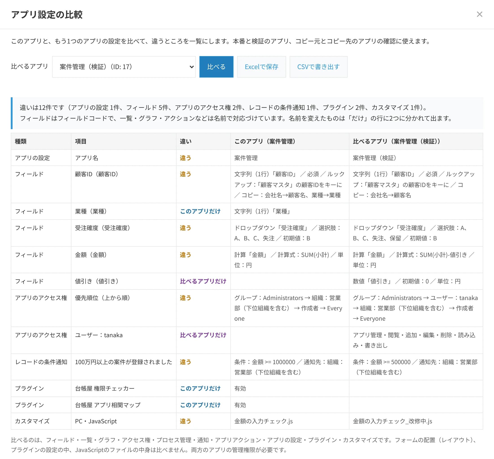

kintoneの本番アプリと検証アプリの設定の違いを確かめる方法
2026年11月5日
運用中のアプリを直すときは、検証用のアプリで試してから、本番のアプリに反映すると安全です。
そのときに気になるのが、「反映したあと、本番と検証で設定がそろっているか」です。
このページでは、引き継がれにくい設定と、2つのアプリの設定を比べる方法をまとめます。
検証用のアプリと、引き継がれない設定
サイボウズの「開発環境を用意する場合の設計」では、検証用のアプリの置き方として、本番と同じドメインに置く方法と、別のドメインに置く方法が紹介されています。
- 同じドメイン：本番の組織やユーザーを使えるため、アクセス権・プロセス管理・通知を本番と同じように設定できます。誤って使われないよう、非公開のスペースに置くことがすすめられています。
- 別のドメイン：データを本番と完全に分けられます。本番への移行は、アプリテンプレートが基本です。
アプリテンプレートでは、条件通知・アクセス権・プロセス管理・アクション、プラグインなどの拡張機能の設定は引き継がれません。これらは手で設定し直すことになり、ミスが起きやすくなります。
同じガイドでも、反映のあとに、アクセス権や通知が想定どおりに設定されているかを確かめることがすすめられています。
確かめたい設定
| 設定 | 確かめるところ |
|---|---|
| フィールド | 種類・必須・選択肢・計算式・初期値、ルックアップと関連レコード一覧の参照先 |
| 一覧・グラフ | 表示項目・絞り込み・並び順 |
| アクセス権 | アプリ・レコード・フィールドの権限と、アプリのアクセス権の優先順位（上から順に適用されるため） |
| プロセス管理 | ステータス・作業者・アクションの条件 |
| 通知 | アプリの条件通知・レコードの条件通知・リマインダーの条件通知の条件と通知先 |
| そのほか | アプリアクション、レコードのタイトル、プラグイン、JavaScript・CSSのファイル |
ルックアップや関連レコード一覧は、参照先のアプリIDで設定されています。本番と検証で参照先のアプリが違う（検証用のマスタを見ている）ことがあるため、反映のあとは特に確かめてください。
画面で比べる
2つのアプリの「アプリの設定」を別々のタブで開き、上の表の画面を1つずつ見比べます。
設定の画面が多いアプリでは時間がかかり、見落としも起きやすい方法です。比べた結果は、あとから見返せるように記録しておくと安心です。
REST APIで比べる
アプリの設定は、kintoneのREST APIで取得できます（そのアプリの管理権限が必要です）。2つのアプリで同じAPIを呼び、結果を比べます。
- フィールド・一覧・グラフ：
/k/v1/app/form/fields.json・/k/v1/app/views.json・/k/v1/app/reports.json - アクセス権：
/k/v1/app/acl.json・/k/v1/record/acl.json・/k/v1/field/acl.json - プロセス管理・通知：
/k/v1/app/status.json・/k/v1/app/notifications/general.json・perRecord.json・reminder.json - アクション・アプリの設定・プラグイン：
/k/v1/app/actions.json・/k/v1/app/settings.json・/k/v1/app/plugins.json
結果には、設定の版（revision）やアプリIDなど、アプリごとに必ず違う値も入っています。そのまま比べると違いが多く出るため、名前やフィールドコードで対応づけて比べます。
プラグインで比べる
台帳屋のアプリ設定の比較（無料）は、上のAPIで2つのアプリの設定を読み取り、違うところだけを一覧にするプラグインです。
違いは「違う」「このアプリだけ」「比べるアプリだけ」に分かれ、CSVにも書き出せます。同じkintone環境の中のアプリどうしを比べます。


別のドメインのアプリと比べるときは、それぞれの環境で設計書ジェネレーター（無料）の設計書を作り、見比べる方法もあります。
なお、テスト環境から本番への反映を自動で行うデプロイツール（gusuku Deploitなど）には、差分を確かめる機能があります。
1つのアプリどうしではなく、すべてのアプリの設定が前回の点検からどう変わったかを確かめるなら、有料版の棚卸し・変更監視パックが使えます（30日間の無料試用があります）。